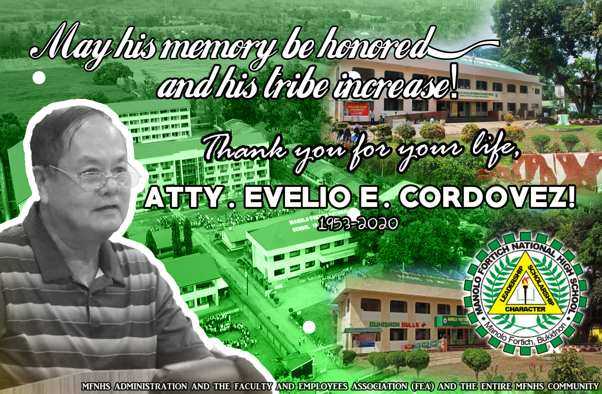

"FACULTY AND STUFF"

"SCHOOL VISION"
"SCHOOL MISION"
"SCHOOL HISTORY"
POSTHUMOUS TRIBUTE: Today, November 30, 2020, as we laid to rest the remains of the late Municipal Councilor Atty. Evelio E. Cordovez, we pay tribute to the man whose visionary endeavors and noble efforts in public service became pivotal in the nationalization of the then Manolo Fortich Municipal High School. Under the administration of then Mayor Socorro O. Acosta, Atty. Cordovez, being the Chairman of Education, moved for the nationalization of the municipal high school. By virtue of Sangguniang Bayan Resolution No. 84-81 - A Resolution Requesting the Batasang Pambansa, Thru the Minister, Ministry of Education, Manila, To Nationalize the Manolo Fortich Municipal High School, Manolo Fortich Bukidnon, resolved on July 20, 1981, the school’s nationalization history took form. Atty. Vel’s inspiration, as well as that of his contemporary legislators and public servants shall eternally be inscribed in the long and glorious chronicles of Manolo Fortich National High School. Manolo Fortich National High School wishes to condole the bereaved family and relatives of the late legislator, and expresses its gratitude for having shared to us the life of a selfless man whose vision for education, arts, development, and public service is truly inspiring. May his memory be honored, and his tribe increase! Thank you for your life, Atty. Evelio E. Cordovez!
"SCHOOL ALMA-MATTER SONG"
Come, raise a song to Alma Mater As from her temple we repair, And on he altar lay our off’rings Ere we leave her tender care. Hail to Williams! Our Alma Mater! To our mother tried and true! May we ever stand at her own right hand And do what she bids us to do. Where’re the tide of life may bear us, Although we wander far from home, Whenever Alma Mater calls us, May we hear her voice and come. Tho’ foes should fight and friends should fail us, And all the world delusive prove, We know that she is ever faithful, And will never cease to love. And if we conquer in the battle, Or Fortune’s smile become a frown, Whene’er we turn our footsteps homeward, She will pour her blessings down.